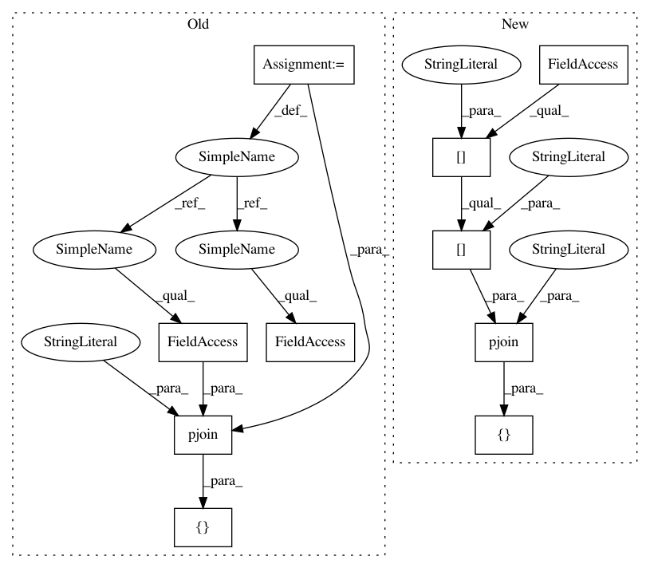

254c728b144e998bd3408557fb27877b524dc906,mltsp/tests/test_flask_app.py,FlaskAppTestCase,test_prediction_proc,#FlaskAppTestCase#,1492
Before Change
assert all(key in pred_results_dict for key in \
("ts_data_dict", "features_dict"))
for fpath in [pjoin(cfg.UPLOAD_FOLDER, "TESTRUN_215153.dat"),
pjoin(cfg.UPLOAD_FOLDER,
"TESTRUN_215153_metadata.dat"),
pjoin(cfg.FEATURES_FOLDER,
"TEMP_TEST01_featureset.nc"),
pjoin(cfg.MODELS_FOLDER, "TEMP_TEST01.pkl"),
pjoin(cfg.CUSTOM_FEATURE_SCRIPT_FOLDER,
"TESTRUN_CF.py")]:
try:
os.remove(fpath)
except Exception as e:
After Change
assert all(key in pred_results_dict for key in \
("ts_data_dict", "features_dict"))
for fpath in [pjoin(config["paths"]["upload_folder"], "TESTRUN_215153.dat"),
pjoin(config["paths"]["upload_folder"],
"TESTRUN_215153_metadata.dat"),
pjoin(config["paths"]["features_folder"],
"TEMP_TEST01_featureset.nc"),
pjoin(config["paths"]["models_folder"], "TEMP_TEST01.pkl"),
pjoin(config["paths"]["custom_feature_script_folder"],
"TESTRUN_CF.py")]:
try:
os.remove(fpath)
except Exception as e:
In pattern: SUPERPATTERN
Frequency: 3
Non-data size: 10
Instances
Project Name: cesium-ml/cesium
Commit Name: 254c728b144e998bd3408557fb27877b524dc906
Time: 2016-02-10
Author: stefanv@berkeley.edu
File Name: mltsp/tests/test_flask_app.py
Class Name: FlaskAppTestCase
Method Name: test_prediction_proc
Project Name: cesium-ml/cesium
Commit Name: 254c728b144e998bd3408557fb27877b524dc906
Time: 2016-02-10
Author: stefanv@berkeley.edu
File Name: mltsp/tests/test_flask_app.py
Class Name: FlaskAppTestCase
Method Name: test_prediction_proc
Project Name: cesium-ml/cesium
Commit Name: 254c728b144e998bd3408557fb27877b524dc906
Time: 2016-02-10
Author: stefanv@berkeley.edu
File Name: mltsp/tests/test_flask_app.py
Class Name:
Method Name: featurize_teardown
Project Name: cesium-ml/cesium
Commit Name: 254c728b144e998bd3408557fb27877b524dc906
Time: 2016-02-10
Author: stefanv@berkeley.edu
File Name: mltsp/tests/test_flask_app.py
Class Name: FlaskAppTestCase
Method Name: test_prediction_page